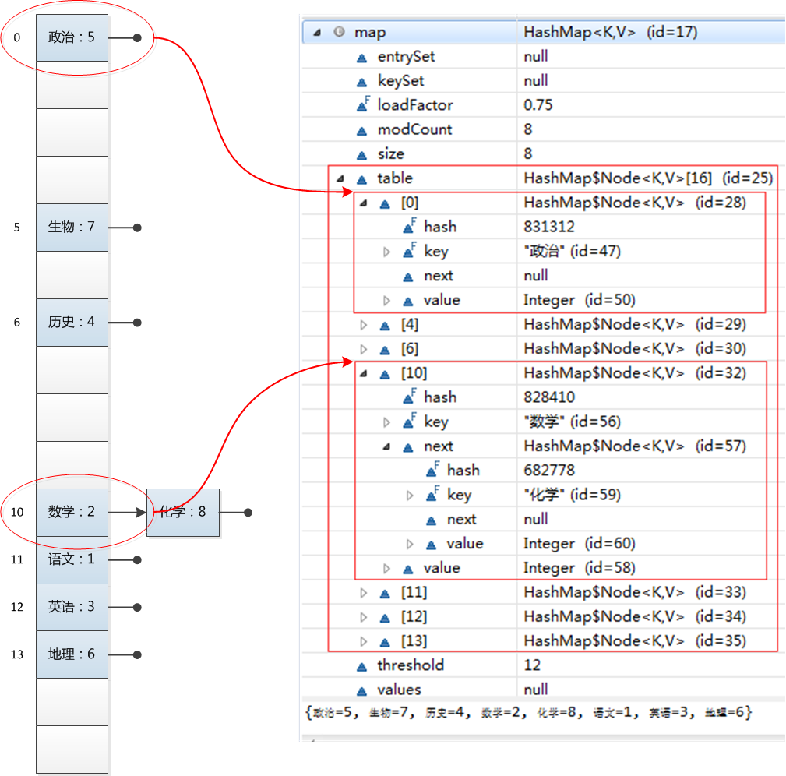

MAP
MAP简单来说就是一个键值对,有一些说法是关联数组. 一个简单实现MAP的方式是使用一个二维数组, 假设这是一个容量为n的Map(Map都有容量,比如HashMap的默认容量就是16,当然也有最大容量,一旦用户定义创建的map对象容量超过最大容量会被当做最大容量处理),那么我们可以创建一个这样的一个数组map[n][2].一行代表一个key-value, map[i][0]表示key, map[i][1]表示value.我们可以通过遍历数组的方式来遍历map, 可以给数组赋值的方式来给map添加元素.
性能是映射表的一个重要问题, 当在get()中使用线性搜索时, 执行速度会相当的慢, 而HashMap将会提高检索的速度. HashMap使用散列码来取代对键缓慢的搜索, 散列码是相对唯一的, 用以代表对象的int值,它通过该对象的信息进行转换而成.JAVA的对象都能生成hashCode, HashMap就是通过使用对象的hashCode进行快速查询的
HashMap
我们先来大致看看HashMap的存储结构:

一个HashMap由一组Node<K,V>[] table数组构成,每个元素中定义了key, value, hash, next
HashMap的hashcode是通过key的hashCode和value的hashCode生成的,算法是Objects.hashCode(key) ^ Objects.hashCode(value).
HashMap的优势在于检索快速,检索成功的条件是hash值和key都一样.在检索的时候会首先获取这个hashMap的第一个节点, 如果这个节点满足条件就返回了, 如果不满足再循环遍历next Node直到检索到满足条件的元素就返回,否则返回空. 这就是hashMap.get(key)方法的大致实现, 同理hashMap.containsKey(key)方法,当然就是根据get(key)方法返回的结果来判定了.
接着,我们来看看put(key, value)方法的实现.根据(n - 1) & hash计算得出index,将新加的node节点添加到table数组的index位置, 如果该位置上没有节点元素,则直接添加node元素并返回,如果已经有节点且key也一样则替换原来节点的value保证key的唯一性否则以链表的形式添加节点,当链表过长就将链表转成红黑树.当整个table满了, 则需要对HashMap进行扩容, 扩容成原来的两倍大小(resize).
关于hash值的生成算法,这里做一个简单的介绍:

结合代码
static final int hash(Object key) {
int h;
return (key == null) ? 0 : (h = key.hashCode()) ^ (h >>> 16);
}
LinkedHashMap
相对于HashMap, LinkedHashMap是有序的, 保留了输入的顺序,所以在输出的时候可以按照输入顺序输出.LinkedHashMap继承自HashMap, 以哈希表与双向链表形式实现顺序输入输出, 根据before,after两个引用来指向上一个和下一个元素. 初始化一个LikedHashMap:
public LinkedHashMap(int initialCapacity, float loadFactor) {
super(initialCapacity, loadFactor);
accessOrder = false;
}
accessOrder: 对于访问顺序，为 true；对于插入顺序，则为 false。一般情况下，不必指定排序模式，其迭代顺序即为默认为插入顺序。 让我们来看看如何添加一个节点
private void linkNodeLast(LinkedHashMap.Entry<K,V> p) {
LinkedHashMap.Entry<K,V> last = tail;
tail = p;
if (last == null)
head = p;
else {
p.before = last;
last.after = p;
}
}
Node<K,V> newNode(int hash, K key, V value, Node<K,V> e) {
LinkedHashMap.Entry<K,V> p =
new LinkedHashMap.Entry<K,V>(hash, key, value, e);
linkNodeLast(p);
return p;
}
LinkedHashMap并没有重写HashMap的put方法,只是重写了newNode方法,改变了添加节点的形式.为了维护LinkedHashMap的有序性,在删除和添加的时候必然会有性能上的损耗.
private void remove() {
before.after = after;
after.before = before;
}
/**clear链表，设置header为初始状态*/
public void clear() {
super.clear();
header.before = header.after = header;
}
reference
- http://yikun.github.io/2015/04/01/Java-HashMap%E5%B7%A5%E4%BD%9C%E5%8E%9F%E7%90%86%E5%8F%8A%E5%AE%9E%E7%8E%B0/